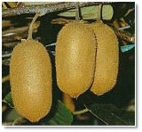

Alors voilà...

L'actinidia
est un arbuste grimpant (sarmenteux); c'est une liane puissante
qui peut couvrir jusqu 'à 10m de fil par saison.
Les feuilles
sont cordiformes, caduques et font entre 10 et 15 cm de larges.
Elles sont portées par un pétiole recouvert de poils
pourpres.
C'est une
plante dioïque (pied mâle et femelle). Les fleurs s'épanouissent
par petites grappes de 3 à 5 fleurs entre mai et juin.
Les fleurs mâles sont de couleur crème et portent
un grand nombre d'étamines dorées. Les fleurs femelles
sont blanches et sont constituées de 20 à 30 styles
portés par l'ovaire.On recommande pour les petites cultures
1 pied mâle pour 3 pieds femelles.
L'actinidia
peut être cultivé dans beaucoup de régions.
L'idéal est de le placer dans un coin mi-ombragé
et frais. Il peut supporter des froids de -15°C voir -20°C
! Cependant, vers fin février, pendant le gonflement de
ses bourgeons, il devient très sensible au gel. Il redoute
également les vents violents. Il préfère
les sols profonds et frais, humifères, perméables
et pas trop calcaires.
Il existe
trois systèmes de guidage pour le tuteur de l'Actinidia:
le contre espalier, la tonnelle ou la pergola. Laisser 3m à
3.50m entre les rangs et 4m à 4.50m sur le rang.
Une plantation
peut produire pendant 50 ans maximum. La mise à fruit débute
généralement 3 ans après la plantation, qui
se fait d'octobre à avril, voire toute l'année avec
des pieds vendus en conteneurs.
Au sujet de
la taille, il est recommandé, comme pour la vigne, de tailler
à 2 yeux au-dessus de la dernière fructification.
Puis, pendant la période de végétation, couper
au dessus de la 4eme feuille. Les nouveaux rameaux qui repartiront
doivent être coupés à 2 feuilles.
L'Actinidia
est très résistant. Il ne craint pas les insectes.
Il est cependant sensible à 2 maladies bactériennes
: le pseudomonas syringae et le pseudomonas viridiflava (taches
et nécroses sur les feuilles). Remèdes : éviter
les sols trop humides, le surplus d'azote, les tailles importantes,
les blessures et les bassinages trop fréquents.
Après
la quatrième année, la récolte atteint généralement
la dizaine de kg par pied, et après 10 ans : 60 kg par
pied ! Les fruits sortent en général en juillet,
mais la récolte ne commence qu'en octobre, en même
temps que la chute des feuilles.
Les différentes
qualités :